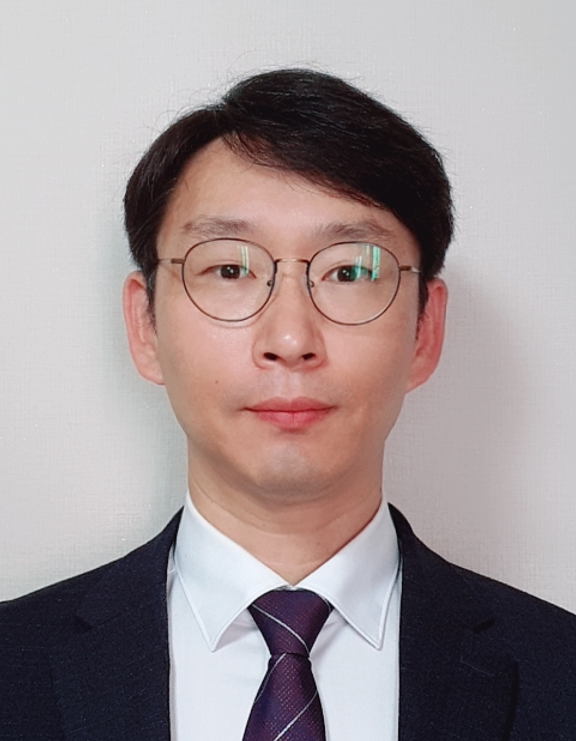
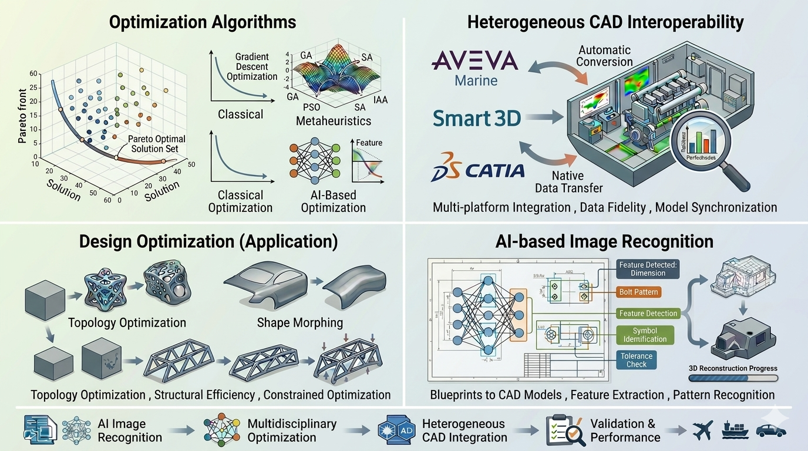

조교수
자동차IT융합학과
자동차모빌리티대학
국민대학교
Lab: 공학관 423호
Tel: 02-910-5507
E-mail: mincheol.cho@kookmin.ac.kr

| 학위 | 전공 | 전문분야 | 대학교 | 기간 |
|---|---|---|---|---|
| 박사 | 선박해양공학 | 설계 최적화 | Kyushu University (일본) | 2004.04 - 2008.03 |
| 석사 | 선박해양공학 | 선박 설계 | 조선대학교 | 2000.03 - 2002.02 |
| 학사 | 선박해양공학 | - | 조선대학교 | 1992.03 - 2000.02 |
| 학회 | 회원자격 | 기간 |
|---|---|---|
| 한국CDE학회 | 정회원 | 2018.04 - 현재 |
| 대한조선학회 | 정회원 | 2013.05 - 현재 |
| The Japan Society of Naval Architects and Ocean Engineers | 정회원 | 2007.12 - 현재 |
| 한국해양공학회 | 정회원 | 2000.03 - 2018.05 |